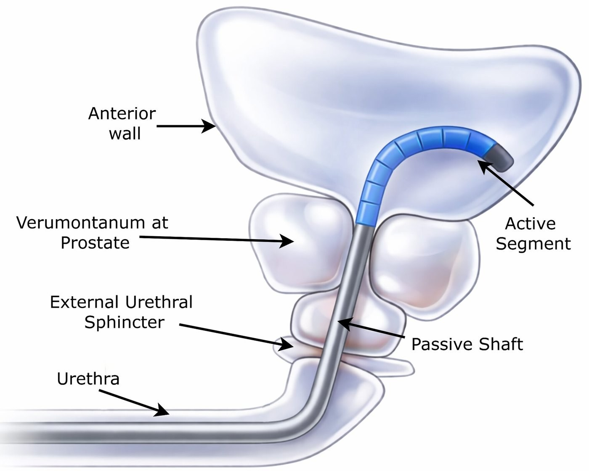
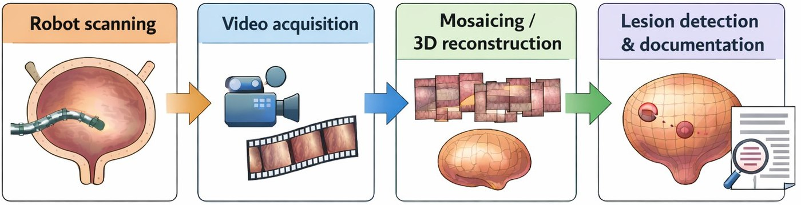
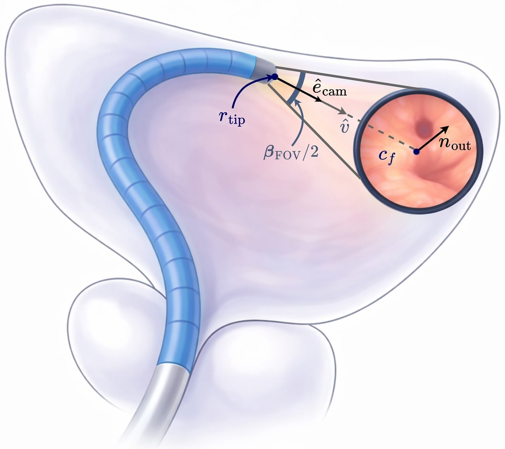
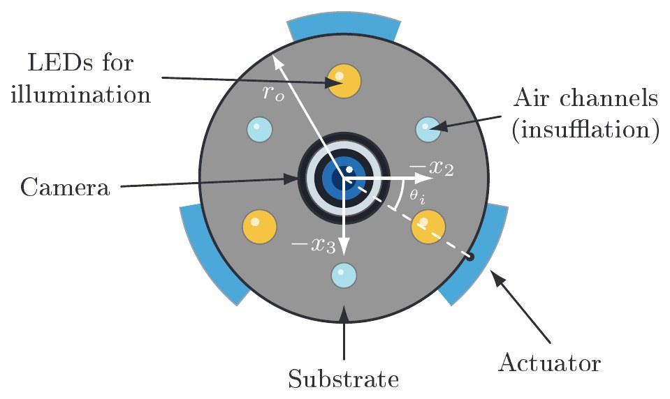
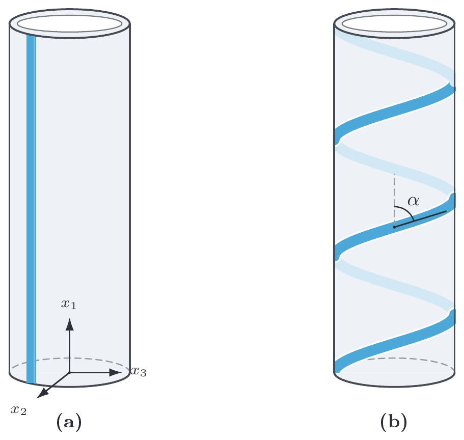
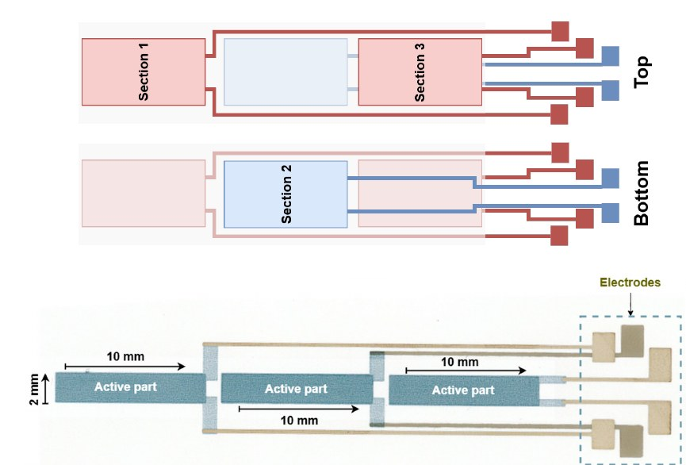
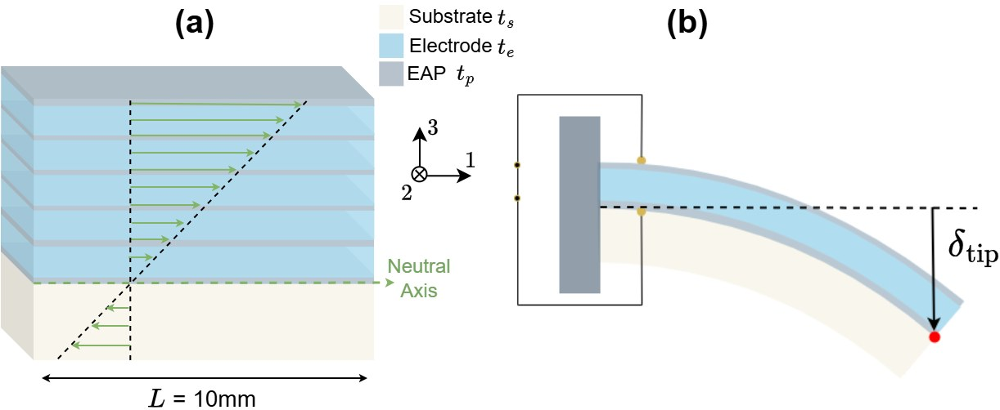
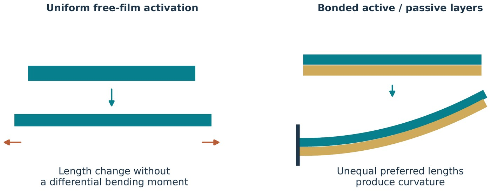

Gallery
Pictures from the work,
and one for fun.
Illustrations from my thesis that explain how the robot works, and a magazine-style portrait with a continuum robot.

On the cover.
A playful magazine-style portrait, with a continuum robot as the accessory.
From the thesis.
Illustrations that explain the robot, from the bladder down to a single layer of film. Select one to see it larger.

Inside the bladder.
A passive shaft enters through the urethra, and the active tip bends to look at the wall.

From video to a map.
The camera's video is stitched into a 3D map of the bladder wall, used to find and document lesions.

Pointing the camera.
The bent tip aims its camera at one patch of the bladder wall.

The tip in cross-section.
A camera in the middle, LEDs and air channels around it, and the actuators on the outside.

Routing the films.
Two ways to place the actuator on the tube: straight along it, or wound as a helix.

Three sections, one film.
One actuator split into three sections, each driven by its own electrodes.

A multilayer actuator.
Polymer and electrode layers stacked on a substrate, and the bend they produce.

From stretch to bend.
A free film only stretches; bonded to a passive layer, it curves.